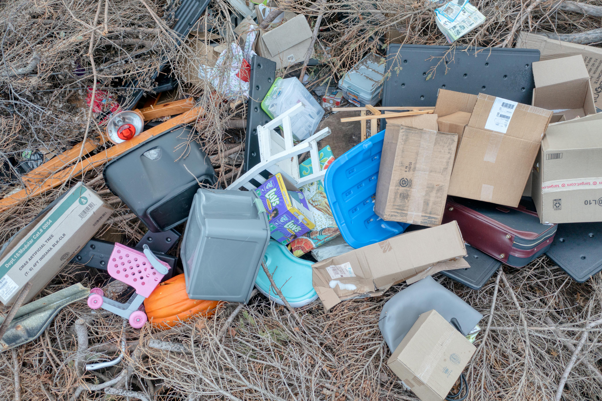

30 years frontline local authority experience helping councils take control of environmental crime
Request a ConsultationPractical training for Environmental Protection teams covering evidence gathering, PACE compliance, interviews, case building and prosecution readiness.

Targeted support to reduce backlog, improve investigation outcomes and increase enforcement action against offenders.
Process optimisation and operational support to clear cases faster while remaining fully compliant with legislation.
Short term or project based deployment to strengthen teams during peak demand or staffing gaps.
Independent review of enforcement cases and procedures to improve success rates and reduce risk.
Design of enforcement policies and workflows aligned with legislation and best practice.
Three decades in Environmental Protection within UK local government.
Not theory. Practical solutions that work in real council environments.
Quickly identify weaknesses and deliver measurable improvements.
District councils, unitary authorities, enforcement teams and environmental services managers across the UK.
Discuss your requirements and current challenges.
Contact Now